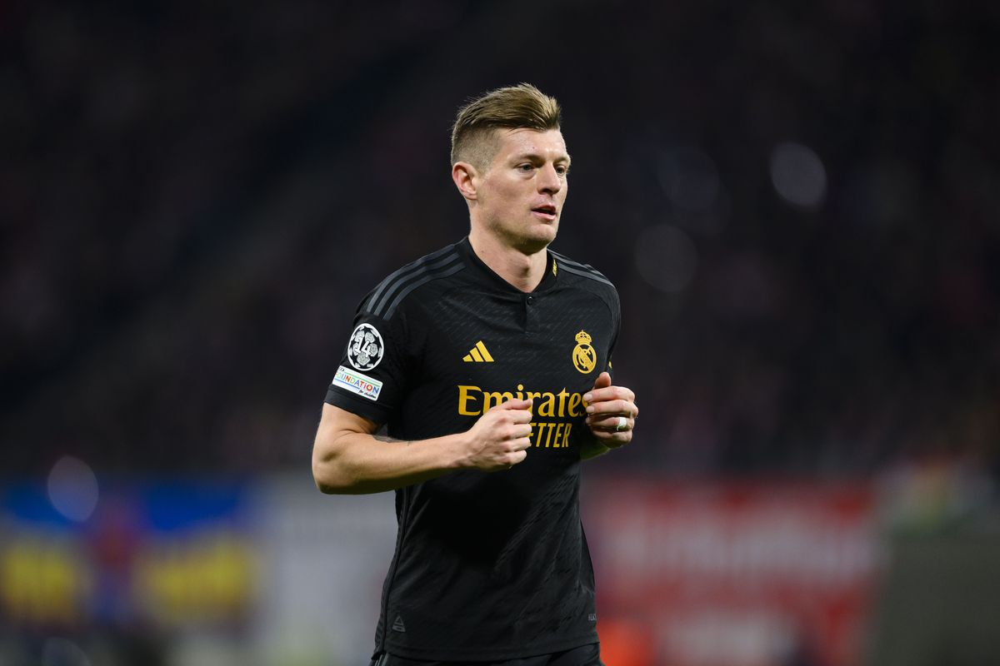

Player Bio
Tony Kroos is a German professional footballer who plays as a midfielder for Real Madrid and the German national team. Known for his vision, passing accuracy, and set-piece ability, Kroos has been a key player in multiple league and Champions League-winning campaigns.
He is renowned for his calmness on the ball, tactical intelligence, and ability to dictate the tempo of the game.
Gameplay Video
Watch Tony Kroos in action: